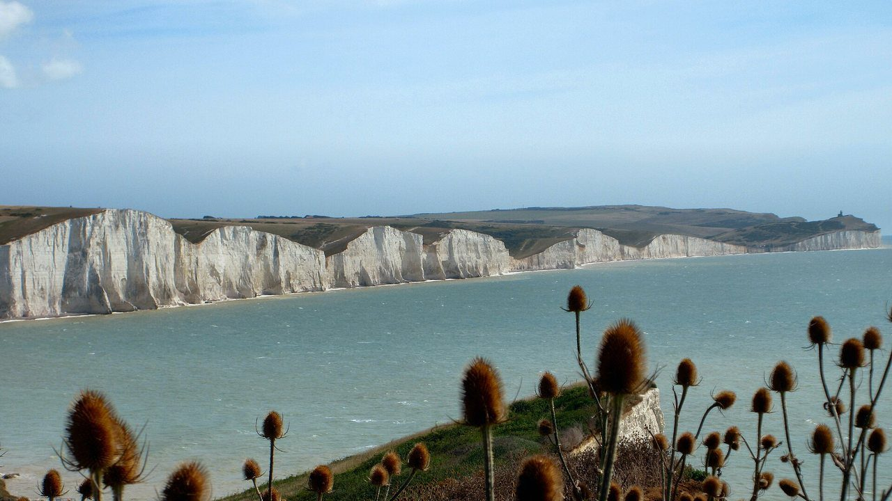

Race, Seven Sisters Cliffs

Behind
Best +0:01
371W
Target 418 W-47 W
- Cadence
- 87rpm
- Heart
- 140bpm
- Speed
- 26.5km/h
Work4 of 29
0:10
Next: · 1:00 at level 11
+19.0%
84 m climbed
2.55 km
24
Resistance / 32
Solo races your best-time ghost: position reads Ahead or Behind, and solo alone gets a Pause button. Frozen at 6:10.